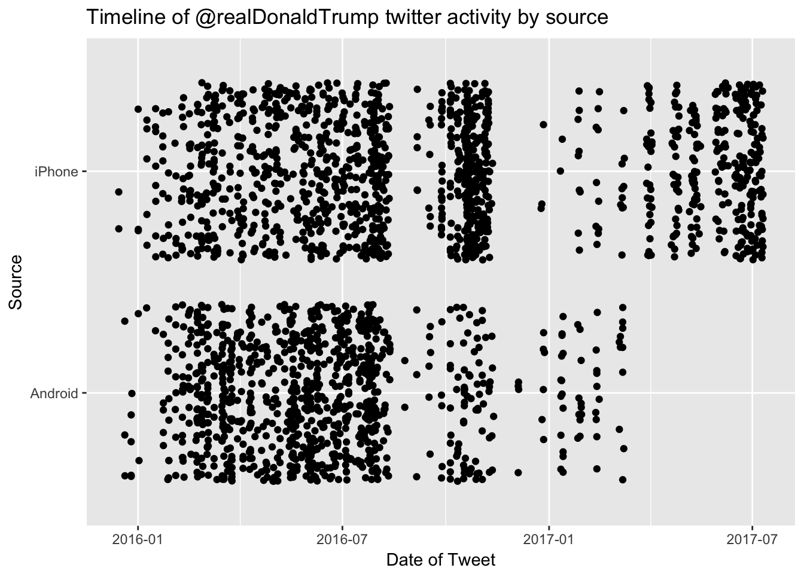

Determining if tweets from @realDonaldTrump are written by the President or his staff
Donald Trump’s proclivity for using Twitter has changed how the White House interacts with the media and broadcasts to the president’s followers. It’s also lead to a birth of a new academic subject and hobby for data analysts. People have studied how engagement has changed during his first 100 days and conducted sentiment analysis of his tweets both during the campaign and as president. There are data archives maintained for all of realDonaldTrump’s tweet history and for just his deleted tweets, as he has been known to delete tweets from time to time.
David Robinson at Stack Overflow had a fantastic analysis of Donald Trump’s twitter history during the 2016 presidential campaign. He looked at the difference in tweets from Android devices versus an iPhone and concluded that they were written by different individuals and that Donald Trump was likely using the Android device. This was helpful in tracking which tweets were sent by the candidate himself and those written by his campaign staff. However, in March, the new president stopped using his Android phone - due to security issues with his aging Android device.
While switching devices might be a boon for our nation’s security, the public can no longer easily distinguish between a real Donald J. Trump tweet from a mere underling. Fortunately, David’s work showed that the content and style of tweets were distinct between Trump and his staff, and these distinguishing characteristics could be used to predict whether it was written by the president himself.
Analyzing @realDonaldTrump’s recent twitter history
I extracted recent tweets from @realDonaldTrump since the campaign and added them to David’s original data set. All of the code from this project, including the script I used to extract tweets and the data themselves can be found at my github repository. To repeat this partial analysis you can also load my data set using the code below.
load(url("https://github.com/kahultman/trump-tweets/raw/master/data/alltweets-processed.Rdata"))Let’s take a look at a timeline of tweets from Android and iPhone devices.
library(tidyverse)
ggplot(alltweets2, aes(created, source)) +
geom_jitter() +
ggtitle("Timeline of @realDonaldTrump twitter activity by source") +
xlab("Date of Tweet") + ylab("Source")
As was reported, @realDonaldTrump seems to have stopped using an Android phone in March. The last tweet from an Android phone was on March 8, 2017.
alltweets2 %>%
filter(source == "Android") %>% top_n(5, created) %>%
select(text)## # A tibble: 5 x 1
## text
## <chr>
## 1 LinkedIn Workforce Report: January and February were the strongest consecut
## 2 Don't let the FAKE NEWS tell you that there is big infighting in the Trump
## 3 I am working on a new system where there will be competition in the Drug In
## 4 Don't worry, getting rid of state lines, which will promote competition, wi
## 5 "For eight years Russia \"ran over\" President Obama, got stronger and stroSince Trump is not tweeting from his Android phone anymore, can we use information in the tweets themselves to predict whether he personally wrote them?
Extract features for modelling
These are the features that were different between Android and non-Android that will be used to build the model. Most of these features were identified during David’s initial analysis, here we are using them to build a predictive model.
- Contains quotes (trump)
- Contains image or url (not trump)
- Contains hashtag
- Time of day
- Day of the week
- Sentiment score on 10 emotional measures (anger, anticipation, disgust, fear, joy, negative, positive, sadness, surprise, trust)
Build some predictive models
To build a model based on the time frame when @realDonaldTrump was using an Android phone, I collected his tweets from Dec 14, 2015 to March 8, 2017. This analysis assumes that prior to March 8, Trump exclusively used his Android device for his tweets and his staff exclusively used an iPhone or other device. Of course, there probably are exceptions to this rule, for example if Trump grabbed his staff’s iPhone for a quick tweet while his was on the charger. But this is an unbiased method for training our model. An alternative method would be to have humans classify whether they think the tweets were written by trump or not, in which case that model might be better at automatically classifying Trump-like tweets. However, it is just as likely that Trump occasionally writes an un-Trump-like tweet, or his staff attempt to emulate his phrasing. I therefore used the device-type variable (Android vs iPhone) as a proxy for our target variable: “trump” vs “not trump”, for training some predictive models. I then randomly split the 2073 total tweets into a training and testing set with an 80:20 split while maintaining the ratio of “trump” to “not trump” tweets.
I chose to use a naive Bayes model. I would like to incorporate a bag of words along with the previously mentioned features and the naive Bayes algorithm can handle the large number of categorical features a document term matrix would provide. It’s also quite a fast algorithm which would allow for real-time implementation. In addition to the naive Bayes model, I also built a random forest model, which had similar performance to the naive Bayes prediction.
library(e1071)
library(caret)
convert_counts <- function(x){
x <- as.factor(ifelse(x > 0, "Yes", "No"))
}
alltweets2 <- alltweets2 %>%
mutate_each(funs(convert_counts), starts_with("sentiment")) %>%
mutate(tod = as.factor(tod))
# Split into training and test sets
train_tweet <- alltweets2 %>%
filter(date.time < "2017-03-08") %>%
mutate(trump = as.factor(if_else(source == "Android", true = "trump", false = "not trump"))) %>%
select(-source, -created, -date.time)
set.seed(45)
in_training <- createDataPartition(train_tweet$trump, times = 1, p = 0.8, list = FALSE)
tweet_test <- train_tweet[-in_training,]
tweet_train <- train_tweet[in_training,]
# Train Naive Bayes Model
tweet_nb <- naiveBayes(trump~., data = tweet_train[,3:18], laplace = 1)
# Predict on test set
tweet_test$nb_pred <- predict(tweet_nb, newdata = tweet_test)
# Examine confustion matrix on test set
nb_cm <- confusionMatrix(tweet_test$nb_pred,tweet_test$trump, positive = "trump")
nb_cm## Confusion Matrix and Statistics
##
## Reference
## Prediction not trump trump
## not trump 158 9
## trump 48 186
##
## Accuracy : 0.8579
## 95% CI : (0.8198, 0.8905)
## No Information Rate : 0.5137
## P-Value [Acc > NIR] : < 2.2e-16
##
## Kappa : 0.717
## Mcnemar's Test P-Value : 4.823e-07
##
## Sensitivity : 0.9538
## Specificity : 0.7670
## Pos Pred Value : 0.7949
## Neg Pred Value : 0.9461
## Prevalence : 0.4863
## Detection Rate : 0.4638
## Detection Prevalence : 0.5835
## Balanced Accuracy : 0.8604
##
## 'Positive' Class : trump
## The model’s overall accuracy is ~86%. It’s very good at classifying trump’s actual tweets (~95% sensitivity) but will sometimes call a staff member’s tweet as Trump’s incorrectly (~77% Specificity). There were only 9 of Trump’s tweets that we incorrectly classified as his staff’s - let’s take a look at them.
tweet_test %>%
filter(trump == "trump", nb_pred == "not trump") %>%
select(text)## # A tibble: 9 x 1
## text
## <chr>
## 1 President Obama will go down as perhaps the worst president in the history
## 2 If Michael Bloomberg ran again for Mayor of New York, he wouldn't get 10% o
## 3 Great POLL numbers are coming out all over. People don't want another four
## 4 Just leaving D.C. Had great meetings with Republicans in the House and Sena
## 5 In Las Vegas, getting ready to speak!
## 6 .@Borisep was great on @JudgeJeanine tonight. Very smart commentary that wi
## 7 The negative television commercials about me, paid for by the politicians b
## 8 Thank you South Carolina!
## 9 Somebody with aptitude and conviction should buy the FAKE NEWS and failingBy examining each variable and the naive Bayes model’s conditional probabilities for each variable we can get a sense on why each tweet was predicted to be not trump. Six of them have pictures and hashtags, which heavily implicate a ‘not trump’ call.
Let’s take a look at how the model has been classifying the tweets since March 8, 2017.
load(url("https://github.com/kahultman/trump-tweets/raw/master/data/future.Rdata"))
future <- future %>%
mutate_each(funs(convert_counts), starts_with("sentiment")) %>%
mutate(tod = as.factor(tod))
future$nb_pred <- predict(tweet_nb, newdata = future, type = "class")## Warning in data.matrix(newdata): NAs introduced by coerciontable(future$nb_pred)##
## not trump trump
## 98 209This is a much higher ratio of Trump tweets (70%) then what was observed in the training and test sets (49%). This could be a real change in pattern, or it could be that our model is better suited to distinguishing Trump from his campaign staff and not well suited to distinguishing him from his administration staff. So let’s examine how the model classified tweets throughout the twitter feed timeline. We’ll look at whether there has been a dramatic change in how it classifies tweets and make sure there isn’t a difference in our predictive ability over time.
library(lubridate)
alltweets2_model <- alltweets2 %>%
select(quote, picture, hashtag, dow, tod, starts_with("sentiment"), id, text, created, date.time, source)
load(url("https://github.com/kahultman/trump-tweets/raw/master/data/tweet_nb.Rdata"))
alltweets2_model$prediction <- predict(tweet_nb, newdata = alltweets2_model[,1:15])
alltweets2_model %>%
mutate(date = date(date.time)) %>%
group_by(date, prediction, source) %>%
summarise(daily_count = n()) %>%
ggplot(aes(x=date, y=daily_count)) +
geom_line(aes(group = prediction, color= prediction)) +
facet_grid(source~.) +
ggtitle("Timeline of Naive Bayes classifier predictions of \n@realDonaldTrump twitter activity by source over time") +
xlab("Date of Tweet") + ylab("Tweets per day") 
We can also remake the jitter plot from above, but color-in how the model predicted each tweet.
ggplot(alltweets2_model, aes(date(date.time), source)) +
geom_jitter(aes(color = prediction)) +
ggtitle("Naive Bayes classifier predictions of @realDonaldTrump twitter activity by source") +
xlab("Date of Tweet") + ylab("Source") 
It looks like there was definitely a flurry of activity during the campaign and a lot fewer non-trump tweets since he has been in office. Our current predictions are reasonably similar to the pre-March-08 time period, when we knew with some certainty which tweets were sent by his staff members.
There are several notable timepoints where twitter activity changes, which I annotate below. The first drop off occurs right around the time of David Robinson’s analysis. It’s possible that this drop off was because The Donald was ashamed after the ‘unmasking’ of his identity in his tweets and his negative twitter sentiment compared to his staff. However, it might be due to the difference in how we collected the data with the Twitter API. I suspect there is an issue in how much data I was able to obtain from the twitter API because my API searches would only return ~400 tweets at a time. I need to look into it further, since I could be missing some additional tweets. Perhaps converting the json files provided by the Trump Twitter Archive would be a good way to double check the data. Twitter activity picks up again near the Access Hollywood tape release on October 7. Then it drops dramatically after the election - especially from the iPhone. The low activity continues through the transition and the iPhone usage from ‘not trump’ appears fairly stable once the Trump administration is sworn in. I think it’s safe to say that there will be plenty of interesting opportunities for mining the presidential twitter feed in the future, as the account is still quite active and it appears that many of those tweets are likely coming from the president himself.
ggplot(alltweets2_model, aes(date(date.time), source)) +
geom_jitter(aes(color = prediction)) +
ggtitle("Naive Bayes classifier predictions of @realDonaldTrump twitter activity by source") +
xlab("Date of Tweet") + ylab("Source") +
geom_vline(aes(xintercept = as.numeric(ymd("2016-11-08")))) +
geom_vline(aes(xintercept = as.numeric(ymd("2016-10-07")))) +
geom_vline(aes(xintercept = as.numeric(ymd("2017-03-08")))) +
geom_vline(aes(xintercept = as.numeric(ymd("2016-08-09")))) +
annotate(geom = "label", label = "Election Day", x= ymd("2016-11-08"), y = 1.4) +
annotate(geom = "label", label = "Access Hollywood", x= ymd("2016-10-07"), y = 1.5) +
annotate(geom = "label", label = "Last Android Use", x= ymd("2017-03-08"), y = 1) +
annotate(geom = "label", label = "Robinson", x= ymd("2016-08-09"), y = 1.6) 
Deployment of the model via the @ReallyIsTrump Twitter bot
To deploy the model’s predictions on new tweets in near-real-time, I wrote an R script that culls the most recent tweets from @realDonaldTrump and predicts whether each was likely to be from Trump himself or his staff using the naive Bayes model on the above features. Tweets that are new and are predicted to be from Trump are then ‘replied to’ by my Twitter Bot [@ReallyIsTrump](https://twitter.com/ReallyIsTrump). You can follow both @realDonaldTrump and @ReallyIsTrump to see how the model is classifying each of his tweets. I would like to eventually have my script triggered by tweet activity, but for now I automated it by scheduling a cronjob to run my script every 10 minutes. Here is the most recent tweet from @realDonaldTrump that the model predicts as ‘likely trump.’
Yep, this is me. @realDonaldTrump
— Really Is Trump (@ReallyIsTrump) July 10, 2017